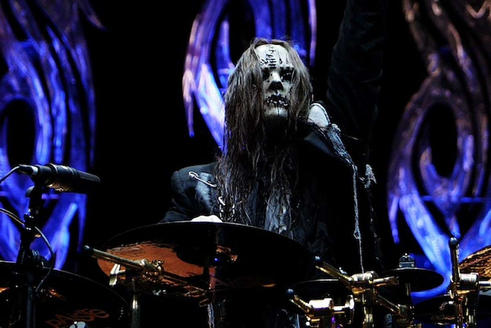

Joey Jordison
Slipknot's former drummer

Joey Jordison at the drums
Here's a time line of Joey Jordison's life:
1975 - Born in Des Moines, Iowa
1996 - Joins The Slipknot
2010 - In August 2010 Jordison was voted the best drummer of the previous 25 years by readers of Rhythm magazine.
2013 - On December 12, Slipknot announced through their official website that Jordison had left the band, citing personal reasons for his departure.
2021 - Jordison dies in his sleep on July 26, 2021, at the age of 46, as stated by his family the next day. His cause of death is yet to be announced.